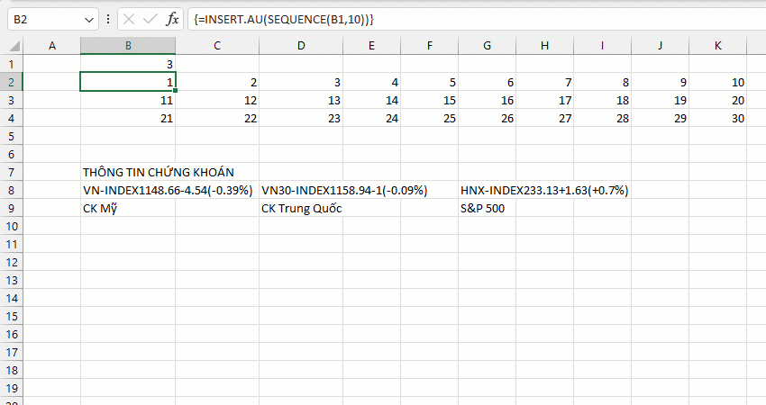

VD: Co dãn vùng kết quả được tạo ra bởi hàm SEQUENCE.
Khoảng cách được duy trì chính bằng khoảng cách từ mảng đến vùng dữ liệu.
Related function
INCREASE.ADJ Đánh số thứ tự tăng dần theo từng phân nhóm và từng phần tử trong phân nhóm đó.
COLOR Trả về mã màu sắc của ô chỉ định.
Return to Home